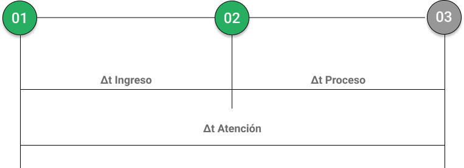

OT MAIN : {{data.otMain ? data.otMain : ''}}
OT CHILD : {{data.otChild ? data.otChild : ''}}
Correlativo : {{data.position ? data.position : ''}}
N° de parte : {{data.partNumber ? data.partNumber : ''}}
Cantidad : {{data.quantity ? data.quantity : ''}}
Descripcion : {{data.description ? data.description : ''}}
Tipo de Atencion : {{data.status ? data.status : ''}}
Usuario : {{data.createdBy ? (data.createdBy.name ?
data.createdBy.name : data.createdBy) : 'Sin asignar'}}
WOF : {{data.wof ? data.wof : ''}}
Trabajo : {{data.task ? data.task : ''}}
Observaciones : {{data.observations ? data.observations : ''}}
{{data.registryTimeElapsed?.days | number : '2.'}} /
{{data.registryTimeElapsed?.hours | number : '2.'}} :
{{data.registryTimeElapsed?.minutes | number : '2.'}} :
{{data.registryTimeElapsed?.seconds | number : '2.'}}
{{data.attentionTimeElapsed?.days | number : '2.'}} /
{{data.attentionTimeElapsed?.hours | number : '2.'}} :
{{data.attentionTimeElapsed?.minutes | number : '2.'}} :
{{data.attentionTimeElapsed?.seconds | number : '2.'}}
{{data.processTimeElapsed?.days | number : '2.'}} /
{{data.processTimeElapsed?.hours | number : '2.'}} :
{{data.processTimeElapsed?.minutes | number : '2.'}} :
{{data.processTimeElapsed?.seconds | number : '2.'}}
